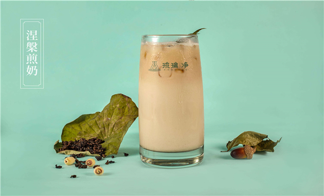
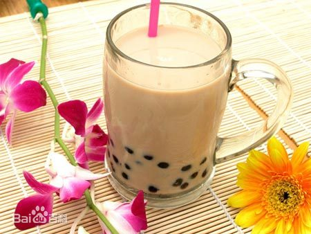
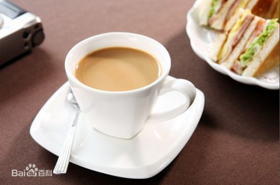
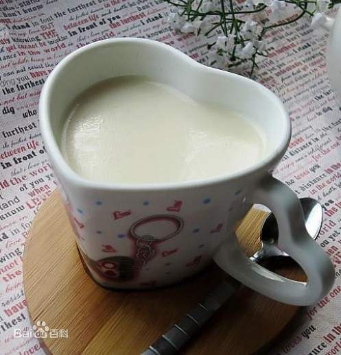
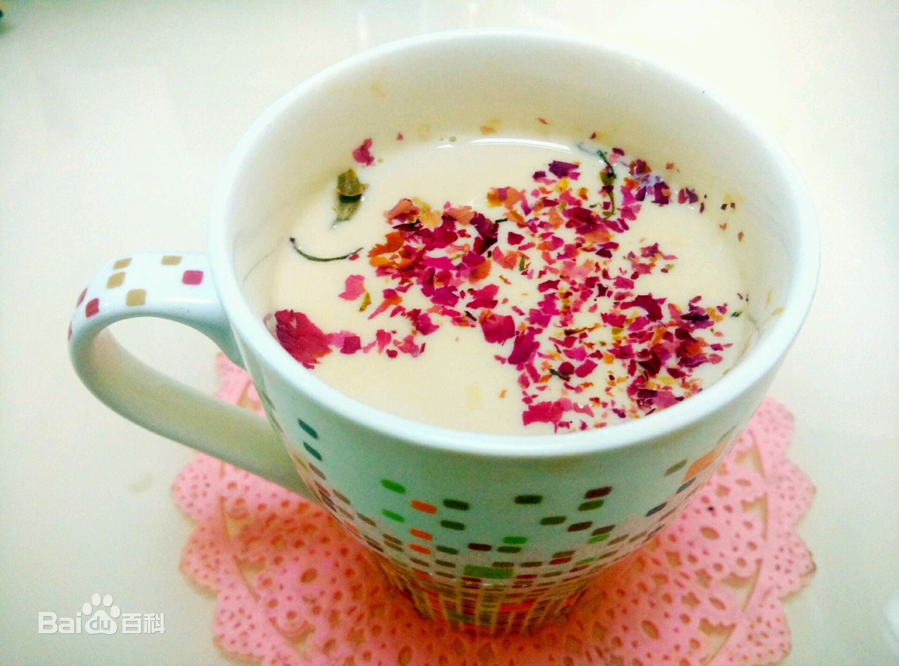

|

珍珠奶茶珍珠奶茶（Bubble tea），又称波霸奶茶，简称珍奶，是一项流传于台湾的茶类饮料，将粉圆加入奶茶之后，就成为珍珠奶茶。 珍珠奶茶是台湾“泡沫红茶”文化中的一种，虽然只是在奶茶中加入木薯粉圆，但却成为台湾最具代表性的饮料与小吃之一。 珍珠奶茶是一种有趣的饮料，通常由黑色或乌龙茶，牛奶或水果口味，甜味剂和台湾菜中的耐嚼质地组成，称为QQ（你可能会认为珍珠奶茶中的‘气泡’） 。大多数情况下，QQ采用木薯珍珠的形式。 “珍珠奶茶”这个名字最初来自于奶茶摇动时形成的气泡，而不是饮料中的有趣珍珠。这种饮料以其他许多名称而闻名，包括“珍珠茶”，“boba茶”和“木薯茶”。 丝袜奶茶丝袜奶茶是地道、香醇的代名词。发明丝袜奶茶的中环老字号兰芳园创办人林木河，现时每日卖茶逾千杯，连泰国白龙王、香港工商及科技局局长王永平等也是其长年捧场客。 但这位年届81岁的“丝袜奶茶之父”从没用过丝袜冲茶，“兰芳园开张时，香港还没流行丝袜！”10多岁到港打工的林木河，与妻子及一名伙计于1952年在中环摆花街开设兰芳园大排档。当年小小的排档，每日下午总吸引附近的码头工人光顾，“工人看见我将茶用个袋冲来冲去，觉得好过瘾。他们见茶袋啡色，以为是丝袜， 以后每次就大叫‘一杯丝袜奶茶’。 林木河娓娓道出丝袜奶茶由来 。 奶茶是具香港特色的一种饮品，是香港人日常下午茶（和早餐）常见的饮品。基本上，在香港茶餐厅供应的奶茶来源于17世纪香港“老街奶茶”。 椰香奶茶奶茶的一种，主要成分为椰汁与红茶。 手捧一杯自己做的奶茶，晒着暖暖的日光，什么也不想，鼻端飘着椰丝的香味，缀上一口，香浓的奶香划过舌尖，后味带着淡淡的苦涩甘甜茶香，真是一种享受。原来幸福的感觉也就是如此简单。 玫瑰奶茶玫瑰花能降火气，可调理血气、促进血液循环、养颜美容，且有消除疲劳、保护肝脏胃肠功能的功效。蜂蜜含有丰富的氨基酸和果糖，具有排毒养颜 减少色素沉着，淡化色斑、润肠通便的功效。 牛奶味甘性微寒，具有生津止渴、滋润肠道、清热通便、补虚健脾等功效。因此，用它们来调制奶茶，既养身又养颜，是女性朋友不可或缺的健康饮品。 |